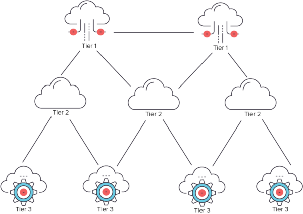
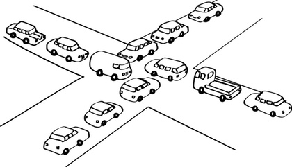

What is the relation between an LCO and an ISP?
Crash course in Internet Architecture
Before I try to answer the titular question, we need to have a basic understanding of the different types of ISPs.
There are three types of ISPs; Tier 1, Tier 2 and Tier 3 ISPs. They are similar to international, national and state highways. Let's see how they work.
Tier 1 ISP
These are international organizations, and they must be connected to all other Tier 1 ISPs. They provide connections to entire countries. Normally, individuals and businesses don't interact with them directly.
Tier 2 ISP
These ISPs are connected to both Tier 1 ISPs and Tier 2 ISPs. These are the gateways to internet for an entire country, and they have a country wide presence. They buy bandwidth and IP ranges from Tier 1 ISPs and provide them to the users and businesses.
Tier 3 ISP
These ISPs buy bandwidth and IP ranges from Tier 2 ISPs and provide them to the end users. They generally have a state or even city-wide presence only. Home users and small businesses typically avail their services.

ISP Hierarchy
BSNL, Airtel & Reliance are Tier 2 ISPs
Alliance, Wishnet and GPTL are Tier 3 ISPs
By looking at the hierarchy of ISPs, you can understand that higher tier ISPs generally have more capital and have greater geographical reach. If you buy a connection from a Tier 2 ISP, they have the ability to give you a connection direct from their own distribution center.
A Tier 3 ISP, on the other hand, can bring a connection near your locality, but not directly to your house. This direct connection to an end-user is called "last-mile-connectivity". This last-mile-connectivity is provided by local cable operators.
Local Cable Operators (LCO)
LCOs set up a network between every residence to his own local hub. Then, the LCO buy internet from a Tier 3 ISP, generally from the ISP which offers them the best division of profits.

LCOs plugging in your cable. Easy!
How do they operate?
- They generally have a small team, mostly in the single-digits
- They provide network to a very small locality
- They decide what kind of physical connection you receive (fibre or copper cables)
- Most of the time, they also provide cable TV as well
- In case of physical damage, they are responsible for repairing it since the infrastructure belongs to them
Who do LCOs work for?

LCOs to ISP: Give me internet and I'll give you customers
LCOs don't have a employer; they have partners. Alliance Broadband is one of their partners.
A Tier 3 ISP provides internet to the LCO, and the LCO provides the ISP with a pool of customers. The ISP and LCO agree upon a division of profit, for example 70-30; that is, 70% of the profits go to the ISP, and the rest to the LCO.
Why is there difference in service between different LCOs?
LCOs don't unionize (as far as I know), they are self employed. They are small teams, and they don't have a large budget. Some LCOs, who have a large pool of customers, can afford to buy better hardware and provide them to his customers.
The hardware an LCO maintains consists of
- L2/L3 switches
- Signal boosters/repeaters
- Cable (fibre/copper)
Some LCOs cannot afford to buy the best quality of hardware. They buy what is decent and reasonable.
On the other hand, some LCOs can be "less efficient/competent". Customers under them generally don't have a good experience. Hence the difference in service.
Which is why, customers under Tier 3 ISPs have such a varied experience, since it ultimately depends on their respective LCO's ability.
Watching the RTOs increasing
The Deadlock between LCOs and ISPs

Deadlock
I't not unreasonable to assume that if an LCO is underperforming, the ISP will come out of the partnership, but that almost never happens. If the ISP walks out, the ISP looses lots of customers.
The LCO, on the other hand, will simply switch to other ISP. The other ISP will gladly take in the influx of new customers.
Another reason why this hierarchy exists because it's very hard for a Tier 3 ISP to create dedicated links to everyone's house. Hence, they offload the cost of connectivity to the LCOs.
Why do people even use Tier-3 ISPs?
You might think that business model has no positives but it has evolved because of a need
- Tier 3 ISPs offer very cheap internet
- Tier 3 ISPs offer unlimited internet plans without any Fair Usage Policy (FUP). In FUP plans, the ISP will reduce your bandwidth after you have consumed a certain amount of data. Most Tier 2 ISPs have very expensive unlimited internet plans and some don't even offer any such plans.
- Tier 3 ISPs generally have better reach. For example, outside of metro cities, you can only find Tier 3 ISPs.
What can I, as a customer, do break this stalemate?
Nothing.
This model exists because we Indians like cheap things. Connectivity issues will continue to exist as long as
- LCO uses sub-standard hardware
- Tier 3 ISPs overcommit bandwidth Overcommitting means that they buy lesser bandwidth compared to the number of customers. This because of the assumption that not all customers will use the internet at the same time. This is not a situation unique to ISPs; it's a tried and tested technique in datacenters. The problem is more visible now because how COVID forced people to use their residential extensively.
Connectivity issues are not always the LCOs fault. Considering the scenario of 2020, even Tier 2 ISPs, from whom Alliance buys connection, are facing issues because of current unbalanced nature of network utilization. However, most of the time, LCOs are the weakest link in the chain, since they use off-the-shelf hardware. Identifying the exact cause is hard to determine, especially for an customer.
Complaining to the ISP about your LCO will rarely help. Instead, you can try to determine where exactly the problem is occurring. Try asking yourself, the following questions
Is the connectivity issue occurring at
- Your router?
- Your local gateway?
- The ISP's egress switch?
- The server you are trying to access?
The above list is ordered by more probable to less probable.
How do you answer the above questions? By checking the following scenarios
- A friend under the same LCO is facing no issues
- A friend under a different LCO but same ISP is facing no issues
- A friend under a different ISP is facing no issues
- Everyone is facing the same issue
Now you know who to blame
- Point 1 true - Blame yourself
- Point 2 true - Blame your LCO
- Point 3 true - Blame your ISP
- Point 4 true - Blame the server owner
Conclusion
Here is a controversial opinion;
If your livelihood is critically dependant on your internet, have a backup network connection, or subscribe to a Tier 2 ISP.
A Tier 2 ISP provides the following guarantees
- Stable connection, not dependant on weather.
- Some degree of QoS assurances
- Uniform customer experience
However, you pay a hefty premium for the above services.

Tier 2 ISP - I love money
You can also try to switch to a different LCO, but the scenario will be quite similar. Tier 3 ISPs are mainly for residential areas, where an average user checks mail, social media and watches movies. COVID-19 has flipped the scenario but we have to work with what we have got.